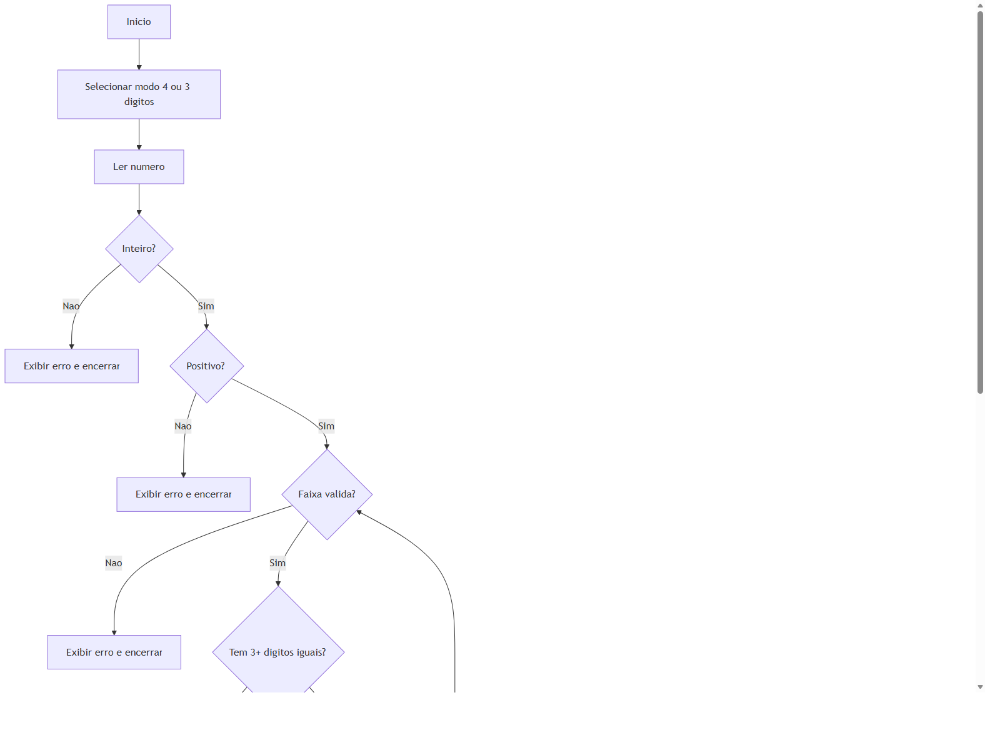

Disciplina: __________________________________________
Professor(a): ________________________________________
Aluno(a): _____________________________________________
Turma: _____________________ Data: ____/____/______
Implementacao com validacoes formais e manipulacao aritmetica de digitos
Substitua o campo abaixo pelo link do seu repositorio publico no GitHub.
Exemplo: https://github.com/seu-usuario/kaprekar-routine-analyzer
Desenvolver um programa que recebe um numero e aplica iterativamente a Rotina de Kaprekar, exibindo cada etapa ate atingir a constante correspondente: 6174 para numeros de 4 digitos e 495 para numeros de 3 digitos.
A manipulacao dos digitos foi realizada com operacoes aritmeticas (divisao inteira e resto da divisao), comparacoes logicas e estruturas de repeticao, sem depender de bibliotecas externas para o calculo.
Caso 4 digitos: entrada 3524 atinge 6174 em 3 iteracoes.
Caso 3 digitos: entrada 352 atinge 495 em 4 iteracoes.
Casos invalidos: entradas com tipo invalido, fora da faixa ou com repeticao excessiva sao bloqueadas com mensagem de erro.
Fluxograma utilizado na apresentacao oral:

O projeto foi concluido com implementacao funcional, aderente ao edital e com documentacao para reproducao em ambiente local e Google Colab.
______________________________________________
Assinatura do(a) aluno(a)